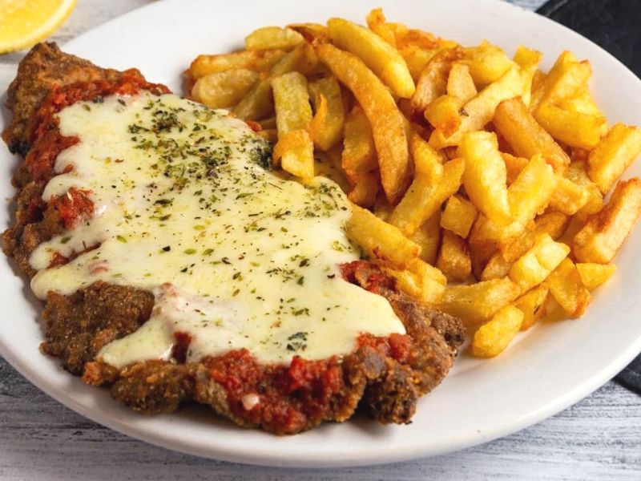

Milanesa Napolitana

Description
The most delicious method of preparing a milanese. Acompany with fries.
Ingredients
- 500g: of Beef for Milanese
- 4: Eggs
- to taste: Oregano or Parsley
- to taste: Salt and Pepper
- 400g: Breadcrumbs
-
to taste: Thick tomato sauce (Neapolitan) (2 tablespoons per Milanese)
-
to taste: Ham Slices and Punta del Agua Soft Cheese (1 or 2 per
milanesa, depending on its size)
- Optional: Olives and Oregano for sprinkling
- as needed: Oil for frying
Steps
- Marinate the beefs with salt, pepper and oregano.
- Pass the beefs through breadcrumbs.
-
Beat the eggs and dip the beefs into them. Then pass the beefs through
breadcrumbs again.
-
Fry each side beefs for some minutes or until the golden brown and meat
is cooked through. Remove them and drain them on absorbent paper.
-
On a baking sheet lay out all the fried milanesas. Top each one with
tomato sauce, a sliced ham and a portion of Punta del Agua Soft Cheese.
-
Bake at very hot oven for about 5 minutes and that’s all! Finish with by
topping each milanesa some olive slices sprinkle then with oregano (or
parsley) to taste. You can garnish with with mashed potatoes, french
fries or a salad.